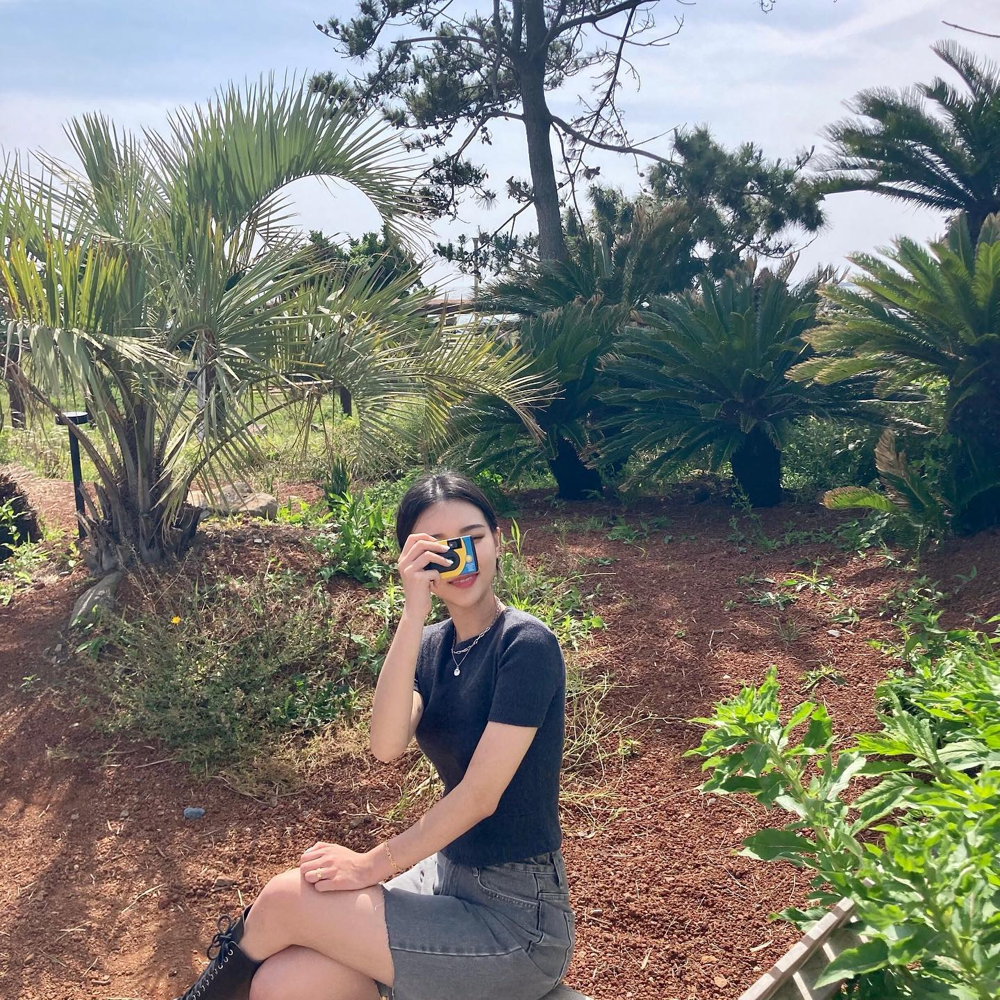
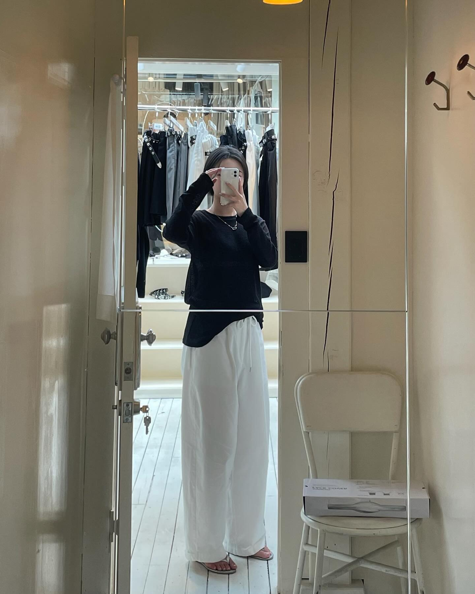
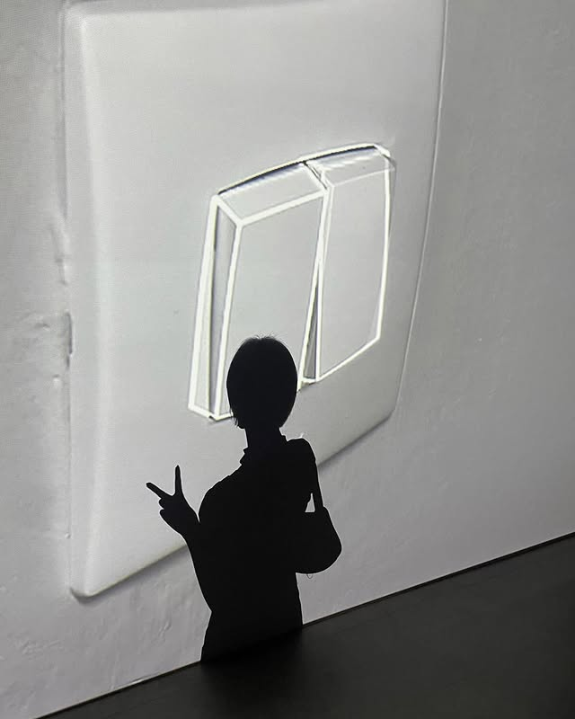

축적된 경험만큼 내 땅이 되었고, 축적된만큼 단단해졌습니다.
Career Experience
- 포토그래퍼
- 창업 + 피팅모델
- 프리랜서 디자이너
- 그 외 나를 만든 경험
-

포토그래퍼 & 디자이너
Photoshop 활용 능력을 기반으로 스튜디오에서 실무 경험을 쌓아왔습니다. 다수의 인물 촬영 및 보조와 반복적인 보정 및 합성 작업을 하며, 이미지 편집 역량을 강화했습니다. 또한 다양한 고객을 직접 응대하며, 각기 다른 요구와 상황을 조율하는 과정에서 명확한 의사 전달과 문제 해결 중심의 커뮤니케이션 역량을 체득했고, 이러한 경험을 통해 단순한 기술 뿐만 아니라, 효율적인 작업 프로세스를 배울 수 있었습니다.
더 줌 스튜디오 / 2018-2020 -

스마트스토어 창업
스튜디오 실무 경험을 바탕으로 의류 편집샵에 합류하여, 다양한 의상 촬영 및 이미지 편집 업무를 수행하며 패션 콘텐츠 제작 전반과 온라인 쇼핑몰 운영 프로세스에 대한 이해를 확장했습니다. 상품 촬영, 이미지 보정, 온라인 채널 업로드 과정을 경험하며 상품이 콘텐츠로 전환되는 실무 흐름을 체득했습니다.
맥코드 / 2020-2021 · 스마트 스토어 / 2021~2024
이후 보다 주도적인 성장을 위해 온라인 패션 쇼핑몰을 직접 창업하여, 피팅 모델로서의 촬영 및 상품 셀렉션, 발주 및 재고 관리, 상세페이지 기획 및 제작까지 전 과정을 직접 운영했습니다. 또한 국내 도매처 및 해외 소싱 일정 조율을 경험하며 실제 유통 환경에서의 실무 대응 역량을 강화했습니다. 운영 과정에서 고객을 직접 응대하며 주문·배송 문의, 교환·반품 요청, 컴플레인 대응을 수행했고, 다양한 문제 상황을 하나씩 해결해가며, 동일 문제가 재발하지 않게끔 커뮤니케이션 전략을 구축해 컴플레인율을 획기적으로 줄여나갔습니다.
이후 오픈마켓 기반 플랫폼의 확장성과 커스터마이징의 한계를 인식하게 되었고, 이를 계기로 독립형 e-commerce 솔루션 기반의 자사몰 구축에 도전했습니다. 쇼핑몰 개설 과정에서 퍼블리싱 작업을 직접 경험하며 구조와 화면 흐름을 이해하게 되었고, HTML/CSS 기반의 마크업과 수정 작업을 진행하며 웹 구현 과정에 흥미를 느끼게 되었습니다. -

프리랜서 디자이너
지속 가능한 작업 환경과 안정적인 수익 구조를 구축하기 위해, 약국에 근무하며 프리랜서 디자이너로 활동을 병행하며 이어갔습니다.
2024~2025
이전 온라인 쇼핑몰 운영 경험을 통해 형성된 관심과 네트워크를 기반으로, 브랜드 협찬 프로젝트에 참여하여 제품 홍보 촬영, 현장 리뷰 촬영, 사용 후기 콘텐츠 제작 등을 수행했습니다.
또한 오픈마켓을 하며 알게된 커머스 커뮤니티 네트워크를 통해 알게된 지인들의 외주로, 배너 디자인, 상세페이지 디자인, 퍼블리싱 지원(마크업·구조 수정) 등의 외주 작업을 하며, 다양한 협업 및 컨텐츠 제작 경험을하며 실무 감각을 고도화했습니다. -

부사관+운동, 경호 경력 등등(수정 필요)
부사관 복무와 운동·경호 경험을 통해 높은 수준의 자기 관리와 책임감을 기반으로 한 업무 태도를 형성했습니다. 체력 관리와 반복 훈련을 통해 장시간 집중력과 신체 컨디션을 안정적으로 유지하는 법을 익혔으며, 이는 촬영, 운영, 일정 관리 등 밀도 높은 실무 환경에서도 일관된 퍼포먼스를 유지하는 데 강점으로 작용했습니다.
특이경력에 대해 더 궁금하다면 ? LINK→
경호 업무 과정에서는 상황 판단력과 즉각적인 대응 능력, 그리고 타인과의 신뢰를 전제로 한 커뮤니케이션의 중요성을 체득했습니다. 항상 예측 불가능한 변수를 고려하며 사전 준비와 리스크 관리에 집중했고, 문제 발생 시 감정에 휘둘리지 않고 침착하게 상황을 정리하는 태도를 유지해 왔습니다.
이러한 경험을 통해 저는 업무를 개인 단위의 작업이 아닌 팀과 전체 흐름을 고려한 책임 있는 역할 수행으로 인식하게 되었으며, 주어진 업무를 끝까지 완수하는 실행력과 안정적인 현장 대응력을 갖추게 되었습니다.


.jpg)
.jpg)
.jpg)
.jpg)
.jpg)
.jpg)
.jpg)
.jpg)
.jpg)